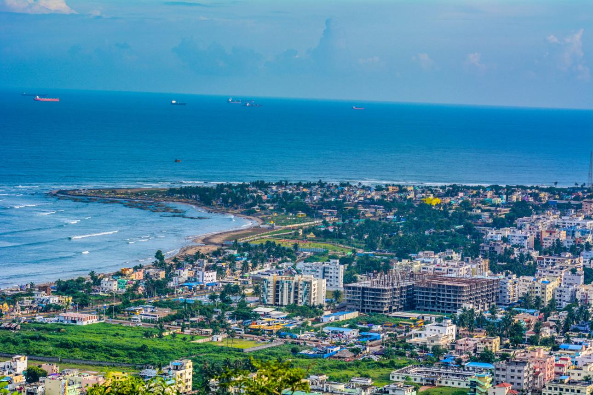

Vizag
Experience the captivating coastal charm of Visakhapatnam, popularly known as Vizag, a city where scenic beaches, green hills, and modern urban life come together in perfect harmony. Situated along the Bay of Bengal, Visakhapatnam is renowned for its picturesque coastline, refreshing sea breeze, and breathtaking viewpoints that overlook the endless blue waters. Destinations such as RK Beach and Kailasagiri provide stunning views and peaceful surroundings, while attractions like the Submarine Museum reflect the city’s maritime heritage. The city also serves as a gateway to nearby valleys and hill regions, adding adventure and natural beauty to its appeal. With its clean beaches, vibrant atmosphere, and balanced mix of nature and development, Visakhapatnam offers a refreshing and memorable travel experience.